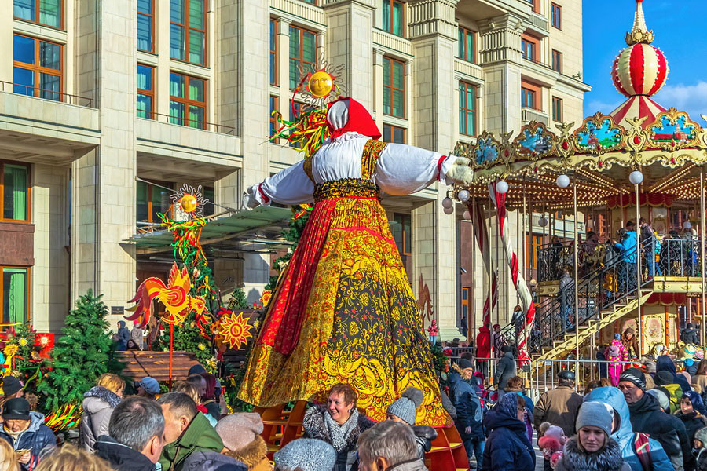
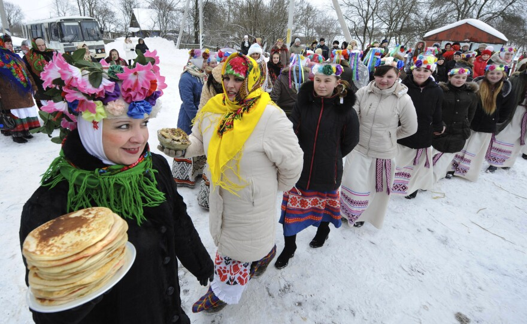
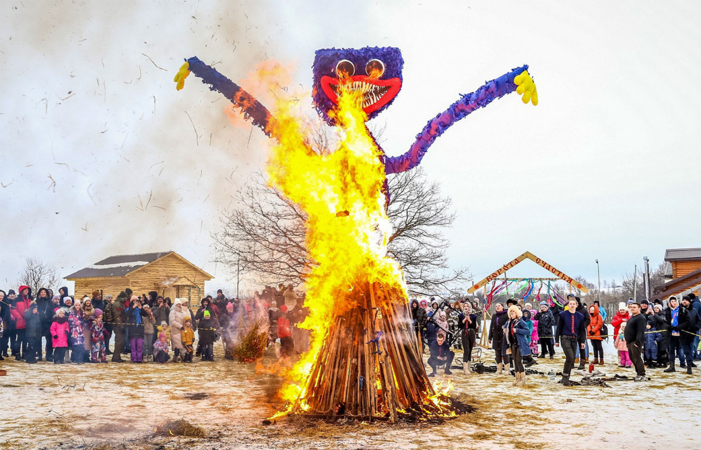
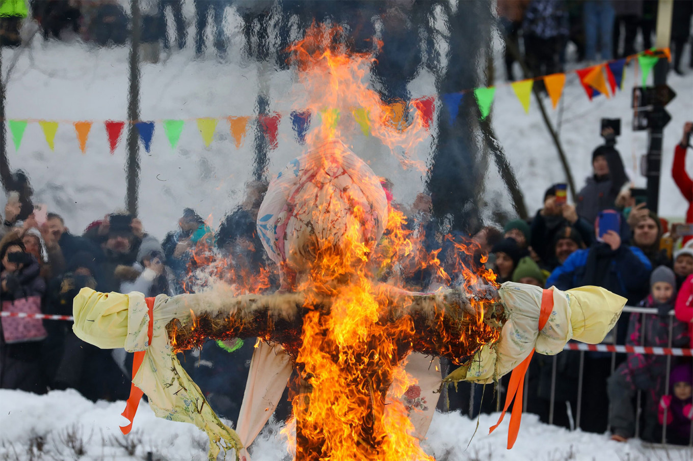
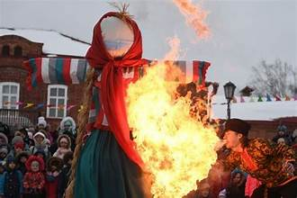
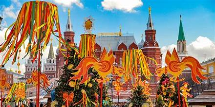

Maslenitsa is a traditional Russian folk festival marking the end of winter and the coming of spring. Often called “Butter Week” or “Pancake Week,” it combines ancient pagan sun worship rituals with Eastern Orthodox traditions preceding Lent.
Maslenitsa dates back to pre-Christian Slavic customs that honored the sun god Yarilo and celebrated fertility and renewal. With Christianization, it was integrated into the Orthodox calendar as the final week before Great Lent, during which meat is forbidden but dairy is still allowed. This gives rise to the festival’s rich foods and butter-filled pancakes.
Celebrations feature sleigh rides, snowball fights, music, dancing, and fairs. Each day of the week traditionally has its own theme—ranging from “Welcoming Monday” to “Forgiveness Sunday.” The most striking ritual is the burning of a straw effigy of Lady Maslenitsa, symbolizing the end of winter and renewal of life.
Maslenitsa remains a vibrant expression of Russian folk heritage, celebrated across Russia and in other Slavic countries. In modern times, urban festivals and open-air gatherings combine traditional songs, crafts, and performances with contemporary entertainment. It serves as both a joyful cultural holiday and a preparation for spiritual reflection before Lent.



